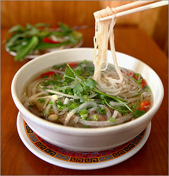
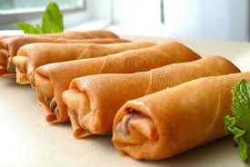
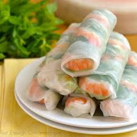

These links are to the sources of information and my first part of the webpage.
Pho is a type of noodles from Vietnam. It is made with broth, vegetables, and meats. You can choose the type of meat, and type of vegetables you want to put in the pho. People in Southern Vietnamese people eat it for breakfeast but normally for lunch. Northern Vietnamese people are different, they eat it for breakfeast, lunch, or dinner.
Pho was created in the early parts of the 20th century in the north of Vietnam. The refugees of the Vietnam war made this food popular. There isn't alot of information about its creation because it was "poorly documented". In Hanoi and Saigon, they make pho differently from each other. They do this by the size of the noodles, how sweet the broth is, and what herbs to put in it. Find out more on Wikipedia.
Now the food.

Yay more Vietnamese food! Spring rolls are rice paper dipped into water, then you put ingrediants into it, like meat, vegetables, rice noodles, and to serve you eat it with hoisin peanut sauce, nuoc cham, or tuong xao. Egg rolls on the other hand, is a fried roll. It is, like spring rolls, wrapped in rice paper and deep fried. Before you deep fry it, you put the raw ingrediants in it. Ingrediants include, ground or chopped meats/seafood such as pork, crab, shrimp, chicken, taro or cassava, glass noodle, wood-ear fungi or oyster mushrooms and shredded carrots. Now for the food!
No wait I lied. To find more you can find it on Wikipedia Now its the food.

